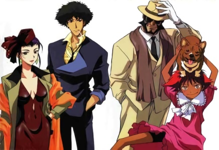
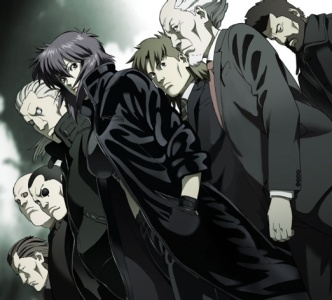

Situé dans le centre ville de Night-City, le complexe Nakajimo est le lieu de prédilection des meilleurs ateliers de confection, des tailleurs et des détaillants de prêt-à-porter du secteur. Ces professionnels du textile bénéficient d'un traitement de faveur depuis que les propriétaires du complexe ont obtenu l'exclusivité des droits à la commercialisation pour la Côte Ouest des créations de plusieurs stylistes en vogue en Asie. Les créations de ces stylistes couvrant toutes les gammes vestimentaires de la mode, leurs articles sont répartis entre les commerces qui ont payé le privilège de les distribuer.
